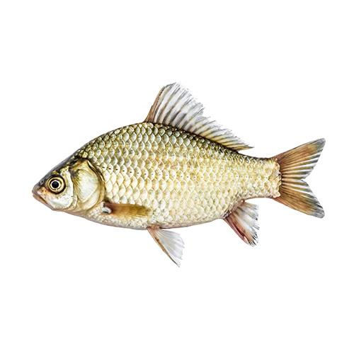

Карась обыкновенный
Кара́сь — широко распространенная пресноводная рыба. Карасей ловят в промышленных масштабах, а также на спортивной и любительской рыбалке.
Караси двух видов — золотые и серебряные — обитают на широкой территории по всей Евразии, в Северной Америке, Индии. Рыбы немного отличаются
внешним видом, но одинаково неприхотливы к условиям жизни. Они водятся повсеместно в водохранилищах, озерах, прудах, заливах, реках.
Некоторые популяции карасей адаптировались к жизни в соленой воде.Пищевые качества карася человек оценил давно. В Германии рыбу называли
«крестьянский карп». В книгах русских классиков, таких как Салтыков-Щедрин и Чехов, караси упоминаются неоднократно.